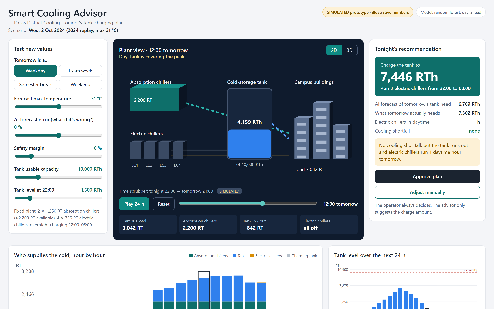
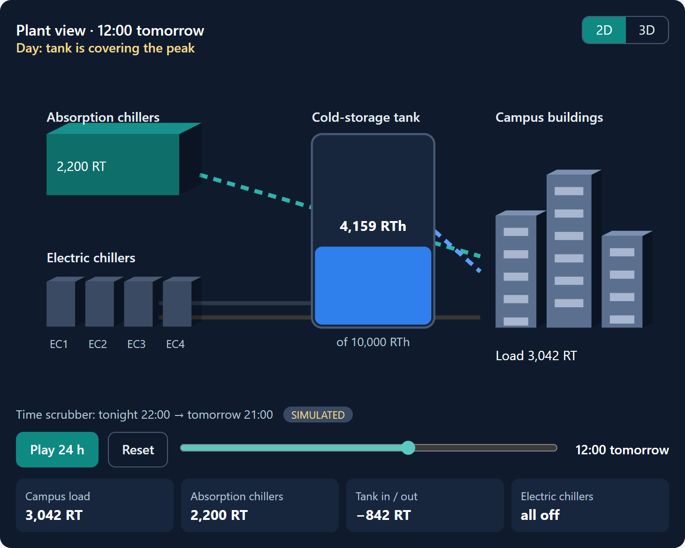
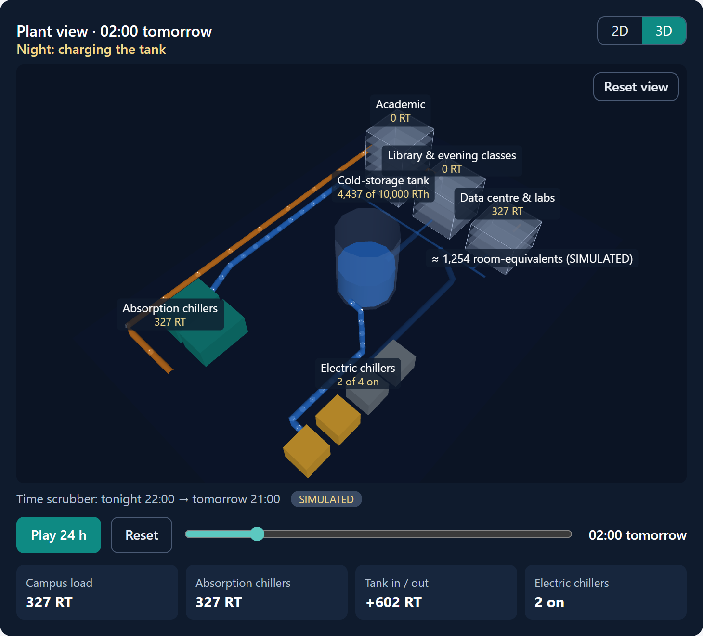
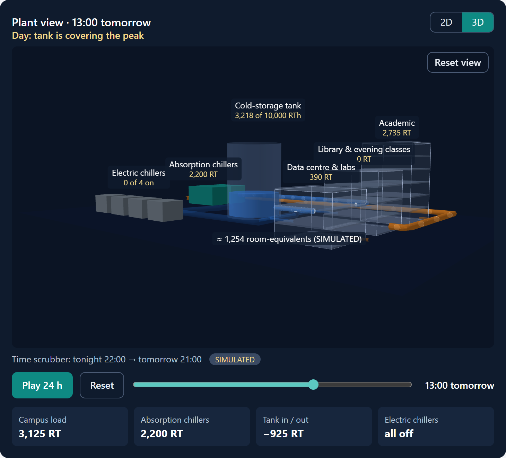
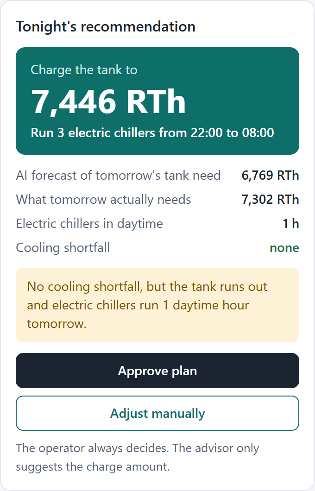
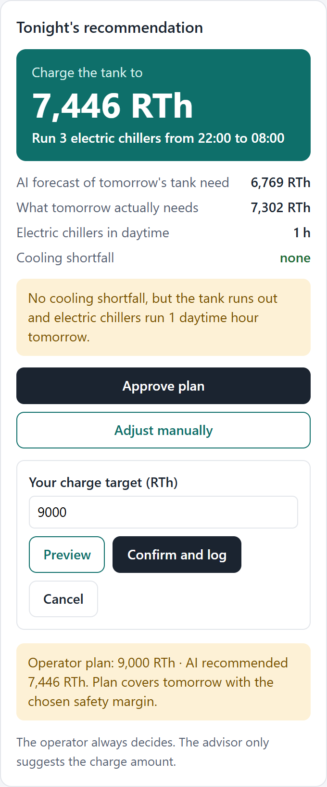
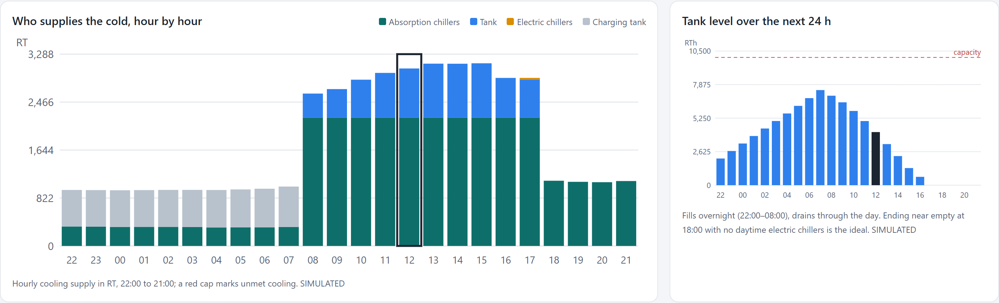
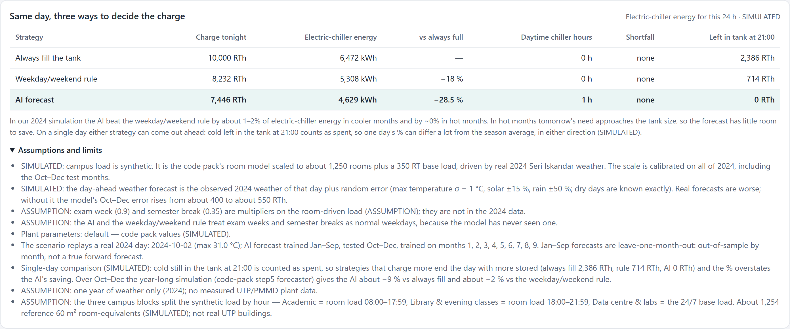
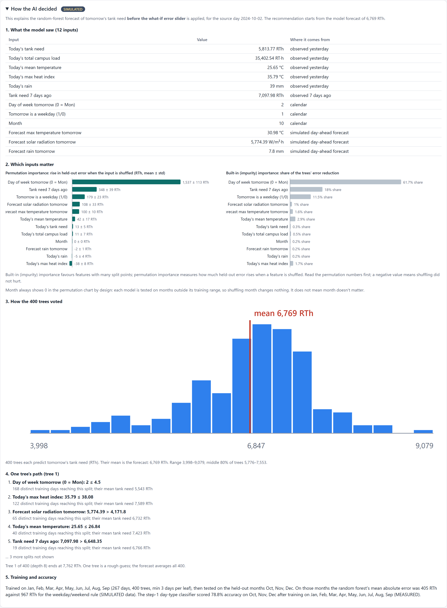

Smart Cooling Advisor: user guide
A tank-charging advisor for a university gas district cooling plant. This guide explains what the system represents and how to use every part of the dashboard.
TEB2023 Artificial Intelligence assignment. For the lecturer marking it and for classmates.
1. What the system represents
Each evening the plant operator decides how much cold to store in the thermal-energy-storage (TES) tank overnight. A full tank covers tomorrow's afternoon peak and lets the absorption chillers carry the rest, so the electric chillers stay off in the daytime. A tank filled too full wastes energy. A tank filled too low forces electric chillers to run at peak hours.
The advisor forecasts how much cold tomorrow needs, adds a safety margin and proposes a charge target. The operator approves it or types their own number. The advisor is a PROPOSED workflow: it suggests, the operator decides.

What is real and what is not
The campus is a synthetic one of about 1,254 room-equivalents (reference 60 m² rooms) plus a 350 RT base load, driven by real 2024 Seri Iskandar weather. There is no UTP plant data and no real building data. Four labels appear throughout the app.
| Label | Meaning | Examples |
|---|---|---|
| SIMULATED | Produced by our model and assumptions. | The campus load, the simulated day-ahead weather forecast, every energy and tank number. |
| MEASURED | Taken from real data. | The 2024 weather, and the step-1 classifier accuracy of 78.8 % on October to December. |
| ASSUMPTION | A value we chose. | Exam and break multipliers (0.9 and 0.35), the split of load into three blocks by hour, the plant parameters. |
| PROPOSED | A design for a future plant, not in use. | The advisor and its approve/adjust workflow. |
2. Install and run
- Open a terminal in the project folder, create a virtual environment and install the packages:
python -m venv .venv .venv\Scripts\activate pip install -r requirements.txt playwright install chromium
The last line is only needed for the browser tests and screenshots. - Start the app:
python -m uvicorn app.main:app
- Open
http://127.0.0.1:8000in a browser. Startup takes about 12 seconds. The first run also builds a cached load file indata/.
The 3D plant view needs WebGL. If the browser has none, the 3D button is disabled with a note and the 2D view keeps working.
3. Walkthrough of the dashboard
Work through the panels in this order. Every number on screen comes from the app's API and carries the SIMULATED label.
Step 1. Test new values

These controls describe tomorrow. Each change asks the server for a new plan within a moment.
- Tomorrow is a…
- Weekday, exam week, semester break or weekend. The app picks the nearest real 2024 day of that type.
- Forecast max temperature
- 24 to 38 °C. If no day of that type reaches the value, the hottest available day is used.
- AI forecast error
- −30 % to +30 %. Use it to ask "what if the forecast is wrong?".
- Safety margin
- 0 to 60 % added on top of the forecast.
- Tank usable capacity
- 5,000 to 25,000 RTh.
- Tank level at 22:00
- Cold already in the tank when charging starts.
Changing any control also clears a manual override, so an old number never meets a new capacity.
Step 2. Plant view, 2D

The card shows two absorption chillers, four electric chillers, the tank and the campus. Electric chillers turn amber when they run. The tank fills with its level.
- Scrubber: drag it to pick any hour from tonight 22:00 to tomorrow 21:00.
- Play 24 h runs the day. Reset returns to 12:00 tomorrow.
- The four tiles under the scrubber give campus load, absorption output, tank flow and electric chillers for the chosen hour.
Step 3. Plant view, 3D
Press 3D in the card header. The scene uses the same hour as the scrubber, Play and the charts. Drag to orbit, scroll to zoom and press Reset view to return. Hover a part to see its name and live value. The campus is drawn as three blocks (Academic, Library and evening, Data centre and labs), each labelled with its load. Blue pipes carry chilled supply and orange pipes carry return. Moving dots show flow, and only where flow is above zero. This block split is an ASSUMPTION.


Step 4. Tonight's recommendation

The teal box is the advice: how much to charge the tank to, and how many electric chillers to run between 22:00 and 08:00. A "capped" chip appears when the target is limited by tank size.
- AI forecast of tomorrow's tank need
- What the random forest predicts.
- What tomorrow actually needs
- What the simulated day really needs.
- Electric chillers in daytime
- Hours the plan still needs them. Zero is the goal.
- Cooling shortfall
- Cold the plant could not supply. "none" is the goal.
The coloured note under the rows states the outcome in words.
Step 5. Approve or adjust, and the decision log

- Approve plan accepts the AI target. One click writes one row to the decision log.
- Adjust manually opens a box. Type your own charge target (0 up to the tank capacity).
- Preview re-runs the day with your number. The charts, plant view and an "Operator plan" note switch to your plan. The AI recommendation and the comparison table stay as they were.
- Confirm and log writes the row. It stays disabled until you have previewed. Cancel closes the box.
Nothing is logged except on Approve or a confirmed Adjust. The server recomputes the plan itself before it writes, so the log never holds numbers typed in the browser.
The log lives in data/decision_log.csv, which git ignores. It holds one row per decision: time, action, the inputs, the AI target, your target, the outcome and the energy for each strategy, all labelled SIMULATED. If the file is missing, the log shows empty. If an old file has different columns, it is renamed to decision_log.<date-time>.old.csv and a fresh file starts.

4. How to read the charts and the table

- Who supplies the cold. Each bar is one hour from 22:00 to 21:00. Teal is absorption chillers, blue is the tank, amber is electric chillers and grey is cold going into the tank. A red cap marks unmet cooling. The outlined bar is the hour chosen on the scrubber.
- Tank level. It fills from 22:00 to 08:00 and drains through the day. The ideal day ends near empty at 18:00 with no daytime electric chillers. A dashed line marks capacity.
The comparison table

The table runs the same day under three strategies: always fill the tank, a weekday/weekend rule, and the AI forecast. The columns give the charge, electric-chiller energy, the saving against always full, daytime chiller hours, shortfall and cold left in the tank at 21:00. The "Assumptions and limits" list under the table repeats what is assumed.
Read single days with care. Cold left in the tank at 21:00 counts as spent. On the hot weekday example (23 Oct 2024, 33.2 °C) the rule beat the AI that day, 5,412 against 5,936 kWh. A single day can go either way, so judge the advisor over the season.
Season result
The year-long simulation gives these electric-chiller energy totals for October to December (SIMULATED):
| Strategy | Energy (MWh) |
|---|---|
| Always fill the tank | 373.7 |
| Weekday/weekend rule | 346.4 |
| AI forecast | 338.9 |
| Perfect forecast | 336.5 |
The AI uses about 9 % less than always fill and about 2 % less than the rule.
5. How the AI decided
The "How the AI decided" card sits below the charts and can be collapsed. It explains the random-forest forecast for the chosen source day, before the "AI forecast error" slider is applied.

- What the model saw. A table of the 12 inputs with their values for this day and where each comes from.
- Which inputs matter. Two bar charts. Permutation importance shows how much held-out error rises when an input is shuffled. Read it first. Built-in importance favours inputs with many split points. Month always shows 0 in the permutation chart by design. It does not mean month is unimportant.
- How the trees voted. A histogram of the 400 trees' forecasts, with the mean marked. The mean is the AI forecast.
- One tree's path. The first five questions one tree asked about this day, such as "is the maximum temperature at or below a value?".
- Training and accuracy. The forest has 400 trees and at least 3 days per leaf. It trains on January to September and is tested on October to December, which it never sees in training. On that test its mean absolute error is about 405 RTh, against about 967 RTh for the weekday/weekend rule.
6. Known limitations
- The campus load is synthetic. No UTP plant data was used, and the app names no real buildings.
- Only one year of weather (2024) is available, and public holidays are not modelled.
- The day-ahead weather forecast is SIMULATED: the observed weather plus random error. Real forecasts are worse.
- Semester break. The AI never saw a break in training, so it treats it as a normal weekday. It over-charges the tank and much cold is left unused at 21:00. The dashboard flags this in its status note.
- The phone alert in the original sketch is not built. The advisor only suggests and the operator decides.